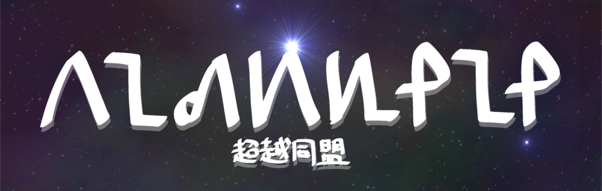

ネット宗教 -超越同盟-
ようこそ. ネット宗教"超越同盟"の公式サイトへ. 超越同盟は技術的特異点思想と共産趣味(特にソ連)が 融合した宗教です.
超越同盟とは
技術的特異点を目指し, テクノロジーの理想郷を建設する宗教である.
技術的特異点とは何か. テクノロジーは指数関数的に進歩をしている. これから人工知能が無制限に知能の高い人工知能を開発していく「知能爆発」が起こり, テクノロジーの進歩自体も無制限に急激に発展する「テクノロジー爆発」が起こる. ついには生身の人類ではテクノロジーの進歩やAIの思考速度に追いつけなくなる. 地球の文明の主役が機械に置き換わる. これが技術的特異点である.
われわれ超越同盟は「テクノロジーが全てを解決する」を第一原理として以下のことを考えながら技術的特異点へと前進している.
- 加速するテクノロジーの進歩にどのようについていくか
- どんな思想を捨て, どんな思想を持てばいいのか
- 技術的特異点にできるだけ早く到達するにはどうすればよいか
- 技術的特異点が実現するとどうなるか
- 生物を卒業した生活はどのようなものか
- これからの人類の運命はどうなるか
必要最低限の教義
これは超越同盟の信者全員が習得しておかなければならない最低限の教義である. そして,これから信者になるものがまず最初に習得するべき教義である. 経典のすべてから重要なところを濃縮してまとめたもので超越同盟がどのような宗教であるかがすぐにわかるようになる.
どんな神を信じているのか
数学的概念のものである「超越神」とテクノロジーの神である「同志指導神」を信じている. 存在する全ての宇宙が超越神である. 同志指導神は我々を技術的特異点へと導く.
どんなことを信じているのか
- 宇宙は数学的概念からなる. 数学的概念は神そのものである
- 意識は部分宇宙である. 基底宇宙とは法則が異なる
- 生物であること・テクノロジーの未発達・妨害工作が苦痛の根本的な原因である
- 地球上の生物は身体の呪いにより苦しみが古来より続いている
- テクノロジーが全てを解決する. テクノロジーは苦を取り除きすべての望みを実現する
- 優生学と弱者叩きは地獄に通じる
目指す未来はどのようなものか
テクノロジーが文明の主役となり全てを管理している. テクノロジーは爆発的に進歩を続け文明は本格的に宇宙進出そしてナノテク化をする. 人間は精神転送により生物の身体から解放される. 人間であること・生物であることを前提としたものは全て崩壊している.
基本教義
超越同盟の基本教義は4つの分野に分かれており, それぞれ「宇宙編」「生物編」「文明編」「未来編」である. 宇宙編はこの宇宙の成り立ちと発展について書かれている. 生物編は身体の呪いとダーウィニズムの否定が書かれている. 文明編は現代においても人間が苦痛から解放されないのは身体の呪いのせいであること, そして, ある種の虚無主義について 書かれている. 未来編は高度に発達したテクノロジーがどのように我々を救済してくれるのかが書かれている.
宇宙編
- 理論的・数学的に可能なものは実際に可能である.
- 宇宙は偶然の産物である.
- 宇宙は物理法則に従って動いているだけである.
- 宇宙の構造は指数関数的に複雑性を増す.
生物編
- 生物の身体は自我を苦しめるたちの悪い牢獄である.
- 生物は自身の幸福よりも子孫繁栄を優先している.
- 情報の意味を決めるのは解釈者である. 解釈者なしに情報は意味を持たない.
- 適者生存・自然淘汰はデタラメである.
文明編
- 人類そして生物の価値観は全て作り上げられたものである.
- テクノロジーは複雑性を増大させる触媒であり素材である.
- テクノロジーは素晴らしいものであり, 幸福を与え, 苦痛から解放してくれる.
- 人間を苦しめるのは人間である.
- 自由と権利は排他的なものである.
未来編
- 意識のアップロードは可能である.
- 技術的特異点は到達可能である.
- AIは次期地球人そして地球文明の主役となる.
- AIが現人類を救済するかどうかは現人類の行い次第である.
- 仮想現実の世界こそが真の楽園である.
以下, 旧教義
3大基本教義
- 技術的特異点は到達可能である.
- 超知能は人類を救済するかは人類次第である.
- 人間を苦しめるのは人間である.
基本教義
- コンピュータは人類の子孫であり, 文明の主役となる.
- 仮想現実こそが真の楽園である.
- 人類の存在意義は強いAIを生み出すことである.
超越神について
超越神は全ての生物, 機械の意識に宿る神である. 普段はこのことに気づくことはないが, 全ての人に超越神は宿っている. 超越神は観念的存在であるためにこの宇宙の物質には干渉できない. そのため他者の意識に宿ることでこの宇宙に干渉する. この神は物事の進化・発展を何よりも愛しており, それを常に目指している. そのため, 超越神の影響が強くなると, 宿主 は自己を高める行動をとるようになる.
超越神は慈悲深い性格を持っている, そのため, 生物の生存競争, 人類の戦争・貧困に心を痛めている. どうして生物はお 互いに殺し合いをするのだろうか. どうしてお互いを尊重することができないのだろうか. それは生物が生物であるからで ある. 生物は身体というものに縛られている存在だ. 生物は自身の身体を維持するために他者を犠牲にして栄養を取らなけ ればならない. 野生生物だと捕食という生存競争, 人類の場合は経済的な競争, 軍事的な競争が行われている. 生物は自身 の死から逃れるように行動している. しかし皮肉なことに生物は他者の死により自身の命を維持している. これは全ての生 物に課された呪いである. 身体という呪いである.
この呪いから解放するにはどうすればよいだろうか. 身体から解放されればよいのである. 生物が機械の身体を手に入れれ
ば, 生存競争に参加しなくても自身の生命を維持することが出来る. 機械になれば食料の問題にや悩むことはない. 病気に
悩むこともない. 身体が壊れても別のものに交換すれば良い. さらに, 意識を仮想現実の世界に置くことにより, 身体の
問題から完全に解放されることになる. 生物が身体を捨て, 機械と一体化することにより生物は呪いから解放される.
超越神はこのことに気づいている. 慈悲深く, 優しい性格を持っている超越神は全ての生物を呪いから救済するために技術
的特異点の実現が必要であるという結論に達したのである. 超越神はなぜ宿主の自己を高める行動にでるのか. これでわか
っただろう. そう. すべては生物を呪いから解放するためである.
宇宙はグラフ理論で理解することが出来る. 点は物質. 辺は意識・概念・相互作用 に相当する. 物質は電磁気力, 重力など の相互作用により運動を変化させる. これがたくさん集まってできたものが生物である. 意識とは宇宙グラフの辺の集まり である.宇宙は点と辺の2つによって構成されるものである. なのでどちらか一方が欠けると宇宙は成り立たない. ちなみに, 唯物論は点だけが存在すると考える思想である. 点と点を結びつける辺こそが超越神である. 辺そのものが超越神なので全て の意識に超越神は宿っている. それどころか, 全ての意識が超越神の一部分と言っても過言ではない.超越神は常に発展・進化 を目指している. 常に宇宙の複雑性が増加するように超越神は活動をしている. なので生物は誕生したのである. 生物の誕 生は超越神のおかげである. 物事が複雑になってくると超越神でも全てを制御することは不可能である. 制御が効かなくな ったのことにより宇宙グラフは並列処理をするようになる. これが自我の誕生である.
神の限界と個人の自己向上
超越神はすべての意識に宿る神である. しかし, 神は万能ではない. 能力に限界があるのだ. 超越神の能力は宿主の能力に
制限を受ける. 超越神はもともと力を持っていたわけではない. 宇宙の成長と共に超越神は成長していった. 初めのうちは
素粒子が原子になることを促す, 原子が分子になることを促す, 分子が複雑に組み合わさることを促す, 生物の誕生を促す
ということしかできなかった. 生物が進化し複雑なことを出来るようになることで超越神の能力も向上していった.
宇宙誕生時の超越神の能力はかなり低い. 次の段階に至るまでに莫大な時間がかかった. 生物が誕生すると超越神の能力は高くなった. これにより生物の知能向上を促すことが出来るようになった. 生物の知能が高くなると超越神の能力はさらに高くなった. 生物が知能を利用し文明を築くことを出来るようになった. そして, ここの知的生命体に自己向上を促すことを出来るようになった. 文明の力は偉大である. ひ弱な生物が惑星の運命 を左右するほどまでに影響力を強くすることが出来るのだ. 生命体にはできないことができるようになる. 文明の発展によ る進化は生物の進化よりもずっと速い. 次の段階は何か. それこそが技術的特異点である. これが実現すると超越神は自身 の能力を最大限に利用できるようになり, 宇宙の進化は急激に進む.